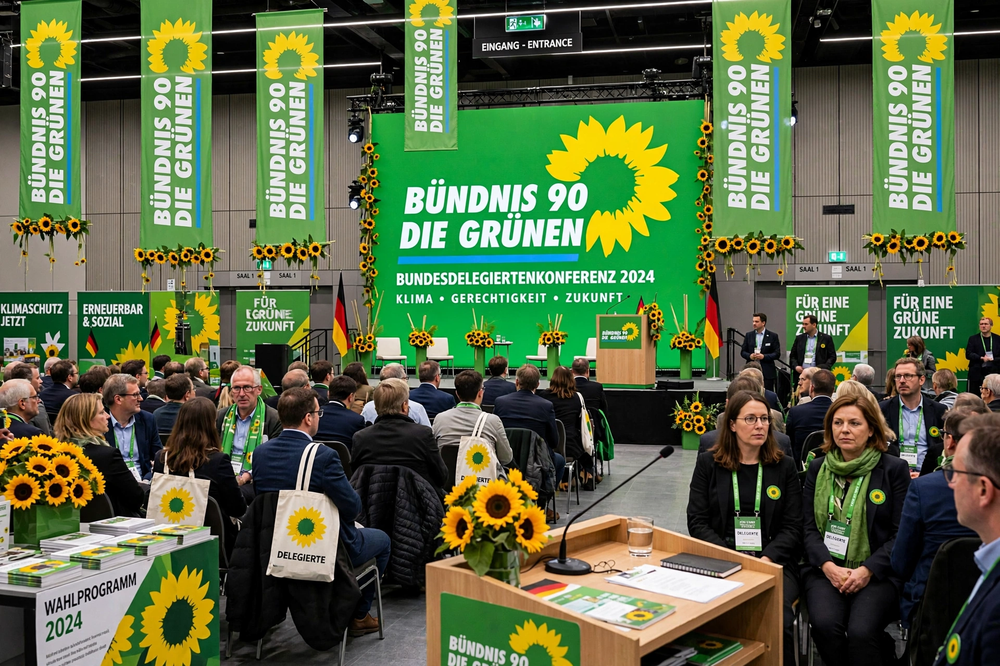

| Alliance 90/The Greens Bündnis 90/Die Grünen | |
|---|---|
| Founded | 1993 (merger); The Greens founded 1980; Alliance 90 founded 1991 |
| Headquarters | Berlin, Germany |
| Ideology | Green politics, social liberalism, pro-Europeanism |
| European affiliation | European Green Party |
| International | Global Greens |
| Symbol | Sunflower |
Alliance 90/The Greens (German: Bündnis 90/Die Grünen) is a green political party in Germany. It was formed in 1993 through the merger of The Greens, founded in West Germany in 1980, and Alliance 90, a coalition of East German civil rights movements formed during the Peaceful Revolution of 1989–90.
The West German Greens grew out of the environmental, anti-nuclear, and peace movements of the 1970s, entering the Bundestag in 1983 and pioneering green politics in a major national parliament. Figures such as Petra Kelly and Joschka Fischer defined the party's early decades; an internal divide between the fundamentalist "Fundi" and pragmatic "Realo" wings gradually resolved in favor of governing participation.
From 1998 to 2005 the party served as junior partner in a "red–green" federal coalition with the Social Democrats under Chancellor Gerhard Schröder, with Fischer as foreign minister and vice-chancellor. The coalition oversaw Germany's nuclear phase-out agreement and renewable energy legislation. At state level the Greens achieved a landmark victory in Baden-Württemberg in 2011, where Winfried Kretschmann became the first Green minister-president of a German state.
After strong results in the 2019 European elections and rising climate concern, the party surged in polls, and in the 2021 federal election it won 14.7% of the vote and joined a "traffic light" coalition with the Social Democrats and Free Democrats, taking ministries including foreign affairs (Annalena Baerbock) and the economy and climate (Robert Habeck). The coalition collapsed in late 2024, and the Greens returned to opposition following the 2025 federal election.
The party advocates rapid decarbonization, expansion of renewable energy, social justice, feminism, minority rights, and a more integrated European Union. Its leadership is always a dual team of two co-chairs with gender parity, a practice inherited from its founding.
See also: Green politics, Politics of Germany